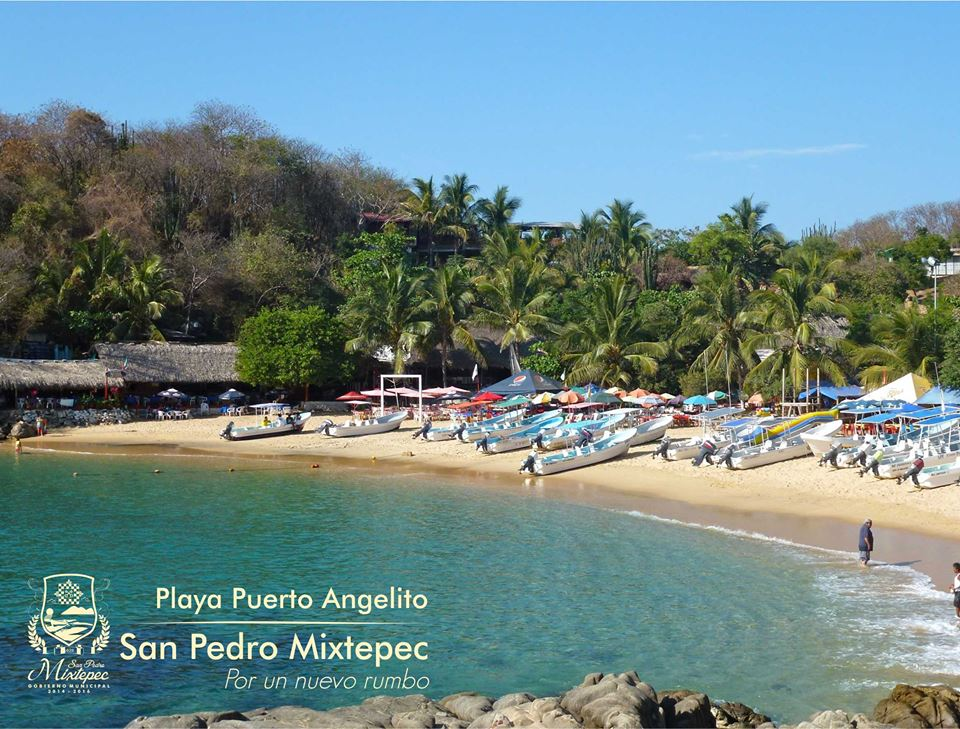

Playa Puerto Angelito

Es la mejor playa para nadar y practicar el snorkel. Los fines de semana y vacaciones es una de las playas más concurridas. Hay servicio de restaurantes y renta de embarcaciones para todo tipo de paseos. Los autobuses deben estacionarse en la parte alta de la zona para evitar congestionamiento vial.
Su arena es fina, de color blanco y con poca pendiente. El agua es templada, transparente con tonalidades verdes y azules, de poca profundidad y oleaje tranquilo. Por sus características se le ha considerado como una alberca natural recomendable para practicar la natación y el snorkel. Los fines de semana y periodos vacacionales es frecuentada por gran cantidad de visitantes, debido a la tranquilidad que aquí predomina.
Cuenta con servicio de restaurante, renta de equipo para buceo libre (snorkel), hamacas y parasoles. Es un sitio ideal para practicar el buceo libre al igual que playa Manzanillo y playa Carrizalillo. Estos sitios presentan condiciones óptimas para la práctica de éste deporte; presentan bastante transparencia, poca profundidad, oleaje tranquilo y temperatura templada.
Se contemplan bellos paisajes submarinos, constituidos principalmente por la flora y fauna marina y el fondo rocoso y arenoso. Existe renta de equipos para buceo libre y puede contratar el servicio de embarcaciones para realizar recorridos por las diferentes playas de Puerto Escondido o para practicar cualquier otro deporte acuático.
Esta playa se encuentra ubicada al suroeste de la población de Puerto Escondido, a 500 metros (1640.41 pies) a espaldas de la Agencia Municipal. Existe un camino pavimentado con acceso a la playa. Caminando se puede llegar por un sendero ubicado a la orilla de la playa Principal.